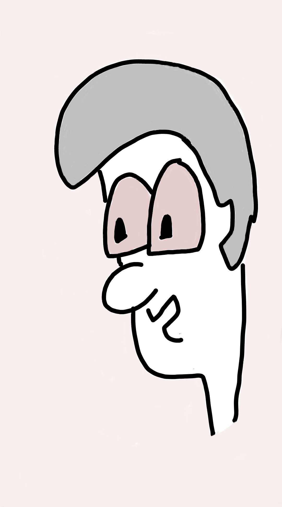

Hello from Archisman,
This site is a collection of links to interesting/ funny/ useful/ weird things that I come across. Most recent update appears on top.
UPDATE 1107.1:
Funny essays by James Mickens:
The Slow Winter : Why transisters arent getting smaller
The Night Watch : About systems programming
Mobile Computing Research is a Hornet's Nest of Deception and Chicanery
To Wash it All Away : About web technologies
This World of Ours : Computer Security
More by this author : The Wisdom of James Mickens
UPDATE 1106.1:
Install/Update all common Windows apps together : Ninite
UPDATE 1029.1:
Using tensorflow to solve fizzbuzz!
Blog Post,
Code in Github
UPDATE 1027.1:
This man tried to make a toaster from stratch and wrote a book about it:
Blog Post,
TED Talk
And here is a cartoon face to complement all this text:
